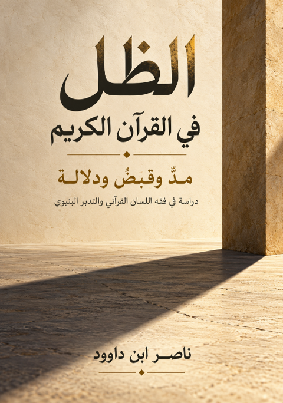

ناصر ابن داوود

نسخة نصية مستخرجة من ملف Word الذي قدمه المؤلف؛ راجع المصدر الأصلي.
جارٍ تجهيز القارئ…
الظل في القرآن الكريم
مدٌّ وقبضٌ ودلالة
دراسة في فقه اللسان القرآني والتدبر البنيوي
ناصر ابن داوود
المقدمة
عتبة الورود
يطأ الإنسان أرض المشهود اليومي محاطًا بظواهر تؤدي وظائفها في انتظام، ثم قد يحجب تكرار المشاهدة دلالتها عن التفكر. نسمي هذا في الكتاب «حجاب الاعتياد»: أن تُرى الظاهرة كثيرًا، ويقل السؤال عنها. ومن أمثلته الظل؛ نراه يتمدد ويتقلص، ونلجأ إليه، ونستدل بحركته على الوقت، ثم نمر به دون مساءلة لسانية أو بنيوية.
يستدعي القرآن النظر إلى هذا المشهد في قوله تعالى:
﴿أَلَمْ تَرَ إِلَىٰ رَبِّكَ كَيْفَ مَدَّ الظِّلَّ وَلَوْ شَاءَ لَجَعَلَهُ سَاكِنًا ثُمَّ جَعَلْنَا الشَّمْسَ عَلَيْهِ دَلِيلًا ثُمَّ قَبَضْنَاهُ إِلَيْنَا قَبْضًا يَسِيرًا﴾ [الفرقان: 45-46]
ينتظم المقطع في مدٍّ، ومشيئة متعلقة بالسكون، وجعل الشمس دليلًا، وقبض موصوف باليسر. هذه هي المادة النصية التي ننطلق منها. أما طبيعة الظل المادية، وكيفية علاقته بالأسباب البصرية، ودلالة القبض على ما وراء المشهود، فأسئلة تتطلب تحريرًا مستقلًا؛ لا تتحول إلى أجوبة قطعية بمجرد ورود الأفعال في النص.
نريد أن نقدم للقارئ المادة ونعلّمه طريقة التدبر، وأن نطرح الأطروحات مع بيان مرتبتها، ثم نترك له وزنها ومتابعة الاختبار. غاية الكتاب تمكين النظر، والمحافظة على الفرق بين القرآن وفهمنا للقرآن. فالانتقال من الاعتياد إلى الاستبصار لا يقتضي إبطال التوصيف الفيزيائي للظل، بل يقتضي إدراك أن التوصيف الآلي لا يستنفد وظائف الخطاب القرآني.
الإشكالية المركزية هي: كيف تُقرأ شبكة الظل في اللسان القرآني قراءة تحافظ على وظائف ألفاظها، وتصل الآيات بنظائرها ومقابلاتها، ثم تضبط ما ينتج عن هذه القراءة من استنباط وفرضية وإشارة علمية؟ ويتفرع عنها معنى المد والسكون والدليل والقبض، وسجود الظلال، وتنوع الستر بين النعمة والهول، واختلاف أوصاف الظل في الدنيا والآخرة.
يعتمد الكتاب فقه اللسان القرآني والتدبر البنيوي، ويستخدم QCROS في الحوكمة المعرفية بحسب الوظائف الإجرائية المبينة في الباب الأول: تحرير الدعوى، وتحديد نطاقها، وفحص الجسر، والاستقراء السياقي والشبكي، والاختبار العكسي، وتسجيل النتيجة وقيدها. لا نفترض أن الرمز المختصر يغني عن البرهنة، ولا أن سلامة التنظيم تثبت سلامة كل نتيجة.
تبدأ الأبواب بالمنهج، ثم اللغة ومادة الاستقراء، ثم آية الفرقان، ثم السجود والنعمة والمشاهد القصصية، ثم الآخرة، ثم القراءة العلمية الاحترازية، وتنتهي بمحاكمة القضايا الاجتهادية. وتجمع الملاحق الشواهد والمعجم وأدوات الاختبار ومصفوفة الدمج وسجل التحقق. كل إحالة إلى فصل في المتن تتبع الترقيم الموحد لهذا البناء.
شكل ١ — خريطة أبواب الكتاب: تدرّج البناء من ضبط المنهج والمفاهيم إلى محاكمة الدعاوى وتسجيل حدودها.
فهرس المحتويات
المقدمة 5
عتبة الورود 5
فهرس المحتويات 7
الباب الأول المنهج والمفاهيم 10
الفصل الأول الحوكمة المعرفية ومراتب القول 10
الفصل الثاني الرتبة والنطاق وقانون الميزان 12
الفصل الثالث القراءة السياقية والشبكية 12
الباب الثاني الظل في اللغة والاستعمال القرآني 15
الفصل الرابع الجذر والصيغ والفروق الوظيفية 15
الفصل الخامس مادة الاستقراء وضبط العد 16
الفصل السادس الظل والفيء والظلام والحرور 17
الباب الثالث آية المد والقبض 19
الفصل السابع التفكيك اللغوي والبنيوي 19
الفصل الثامن الشمس بين الدلالة والسببية 20
الفصل التاسع المد والقبض ووجوه الاعتبار 21
الباب الرابع الظل الساجد والنعمة والمشاهد القصصية 23
الفصل العاشر سجود الظلال والتفيؤ 23
الفصل الحادي عشر موسى والظل في مدين 23
الفصل الثاني عشر أصحاب الكهف وحدود التفسير البيئي 24
الفصل الثالث عشر يونس وبنو إسرائيل وتنوع الغطاء 25
الفصل الرابع عشر المقارنة القصصية والنماذج المجاورة 26
الباب الخامس الظل في الآخرة 28
الفصل الخامس عشر ظلال الجنة والدوام 28
الفصل السادس عشر ظلال العذاب وسلب الوقاية 29